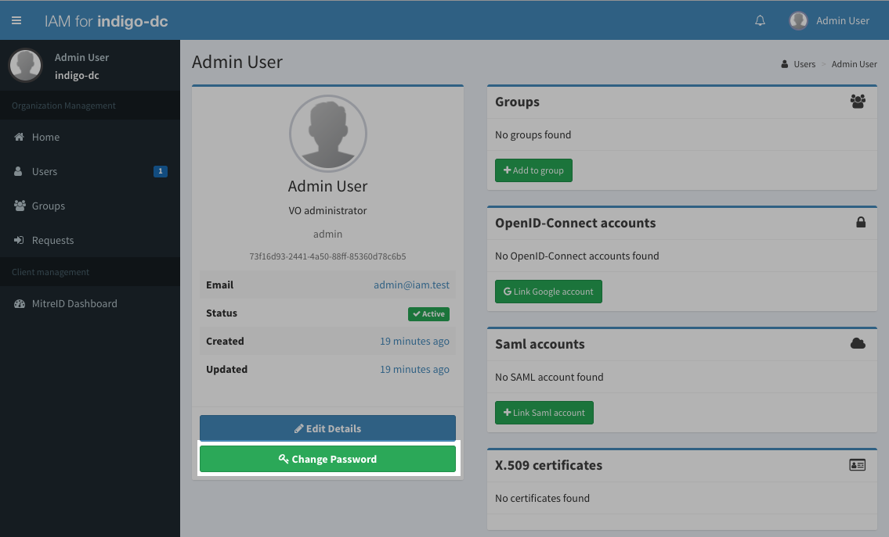

This is the multi-page printable view of this section.
Click here to print.
Return to the regular view of this page.
Getting Started
A quick howto on how to deploy IAM
This section provides insight on how to deploy and configure an IAM service
instance.
IAM is a spring boot application designed to run behind an NGINX
reverse proxy, which is used for TLS termination and possibly load balancing.
The IAM service instances keep all state in a MariaDB/MySQL database, as shown
in the following picture:

Prerequisites
At the bare minimum, to run a production instance of the instance of the IAM
you will need:
- An X.509 certificate, used for SSL termination at the NGINX reverse proxy;
you can get one for free from Let’s Encrypt;
- An NGINX server configured to act as a reverse proxy for the IAM web
application; more details on this in the NGINX section;
- A MariaDB/MySQL database instance; more on this in the database
configuration
section;
- A JSON keystore holding the keys used to sign JSON Web Tokens; more on this
in the JWK section;
You will also need to choose whether you want to deploy you service as a
docker container (recommended) or install from
packages.
And finally, you will have to setup a minimal IAM configuration and change the
administrator password for the newly configured IAM service; more on this
in the basic configuration section.
1 - NGINX configuration
IAM relies on NGINX for TLS termination and load balancing.
The example configuration below provides the minimal configuration needed to
have NGINX working as a reverse proxy for the IAM web application:
server {
listen 80;
listen [::]:80;
server_name _;
return 301 https://$host$request_uri;
}
server {
listen 443 ssl;
server_name YOUR_HOSTNAME_HERE;
access_log /var/log/nginx/iam.access.log combined;
ssl on;
ssl_protocols TLSv1 TLSv1.1 TLSv1.2;
ssl_certificate /path/to/your/ssl/cert.pem;
ssl_certificate_key /path/to/your/ssl/key.pem;
location / {
proxy_pass http://THE_IAM_APP_HOSTNAME_HERE:8080;
proxy_set_header X-Real-IP $remote_addr;
proxy_set_header X-Forwarded-For $proxy_add_x_forwarded_for;
proxy_set_header X-Forwarded-Proto https;
proxy_set_header Host $http_host;
}
}
X.509 client authentication
IAM supports X.509 client certificate authentication. To enable X.509 client
certificate authentication use a configuration similar to the
one used
in the IAM development environment.
In particular, set the ssl_verify_client=Optional option and configure the proxy_set_header
directory as follows:
proxy_set_header X-SSL-Client-Cert $ssl_client_cert;
proxy_set_header X-SSL-Client-I-Dn $ssl_client_i_dn;
proxy_set_header X-SSL-Client-S-Dn $ssl_client_s_dn;
proxy_set_header X-SSL-Client-Serial $ssl_client_serial;
proxy_set_header X-SSL-Client-V-Start $ssl_client_v_start;
proxy_set_header X-SSL-Client-V-End $ssl_client_v_end;
proxy_set_header X-SSL-Client-Verify $ssl_client_verify;
proxy_set_header X-SSL-Protocol $ssl_protocol;
proxy_set_header X-SSL-Server-Name $ssl_server_name;
2 - Database configuration
IAM keeps state in a MariaDB/MySQL database, and will need its own schema and a
user that has read/write/schema change privileges on such database.
IAM has been tested successfully against:
- MySQL v. 5.5.5
- MariaDB v. 10.1.22
For more instructions on how to create a database schema and a user with
administrator privileges on it, see the MariaDB documentation.
Assuming the organization that IAM will manage is called test, the following
commands can be used to create a database and a user for the IAM application:
CREATE DATABASE iam_test_db CHARACTER SET latin1 COLLATE latin1_swedish_ci;
CREATE USER 'iam_test'@'%' identified by 'some_super_secure_password';
GRANT ALL PRIVILEGES on iam_test_db.* to 'iam_test'@'%';
You may want to restrict the set of hosts from which a mysql client can connect
to the database with the above credentials according to your deployment needs.
3 - JSON Web Keys configuration
JSON web keys are used by the IAM to sign and verify token signatures.
To generate a JSON web key for your IAM deployment, you can use the
json-web-key-generator tool provided by MitreID connect.
The following command clones the json-web-key-generator Git repository to a
local directory:
git clone https://github.com/mitreid-connect/json-web-key-generator
Build the code with:
Maven 3.6.x or greater supporting Java 11 is required.
You can then generate a key with the following command:
java -jar target/json-web-key-generator-0.9-SNAPSHOT-jar-with-dependencies.jar \
-t RSA -s 1024 -S -i rsa1
Full key:
{
"keys": [
{
"p": "3oh7ex6zgdmJh5NBD0IplmBDDGC2ECu2A1vcp8e8DqE7OSSpAc1T9tTjJioCGqkNM51JK_MtgCJz1CiysVDOQQ",
"kty": "RSA",
"q": "nRmBm5tQ2wmOtd1XUYDRH2qWai6eElt-1cvO5tnTdWZkFaAeaHQ3_xf_PFOjyAv5Y5rNLgf_Xbu9UCo_mSrDMQ",
"d": "BGHRhQP6ADqqSrM8_mI0YhjGStj1aW9rLi7wXQMJ122kegPxIT7dfP-5UScxykD_BrCCHQVPxdJl5wXy-giZnhaL9wtDkOXb8D8RCi1n02cs3Z1T23xONi_AG47QPBZjM5GcX-oOGCENByuEIdkU_Bn6vvqM3oyVlj5sio7tNAE",
"e": "AQAB",
"kid": "rsa1",
"qi": "RarXtTFCE3hk5ZanLWEapDnn7SLSxAvDcBTmG5SpCI9Eix7cfTigaK6N7OQIN0uGO1GJ-KVWL2v8dyI1jMoU6g",
"dp": "MtBtieavzMXUzr2ETKyp_GmMxeXLjRO-IzQ1xaYpPhn5AQprATtWofVozQ0on9fcaN3QmJWV3T2Av4BvlWfDQQ",
"dq": "CWJ7rpsBooQYpV6al8DVPUY1xBQS10_l7MmnC31Zt3qtYelVx7GhoriBQ85PS2UDueKGfUh3BddwQLi1YeX_EQ",
"n": "iI_fuJq4z_9VQY5EH41sQWOAYUsjtxAFjRnAc1P5-GPOx3Izg9V7yKNmudLUt-jIkv6D5h-AzrhEV6DOdBRoiN4el1mCZ95jiJkjU2kpVOmutDysZkrn667zPd43w7E6IqHnahmMrVUjUyx6pie1SqJHLUXghz8Gle-1yi08_XE"
}
]
}
Save the output of the above command (minus the Full key: initial text) in a
file, e.g. keystore.jwks.
See JSON Web Keys (JWK) reference page for more details about configuration of JSON web keys.
4 - Deployment with Docker
The IAM service is provided on the following DockerHub repositories:
The docker image tag corresponding to this version of the documentation is:
indigoiam/iam-login-service:v1.11.0
The IAM image has been tested to run properly with either Docker or Podman. The configuration for the
IAM service container is the same but the details to run the container slightly differ. Differences
are covered in the next sections. In both cases, it is highly recommended to enable SELinux for
increased security.
Configuring the IAM service
Prepare an environment file that will contain the environment variables
settings for the IAM service container. See the configuration
reference for a description of the variables.
This environment file will be passed to the container with the --env-file option of the
container engine. You can choose whatever file path/name you want.
Running the container
Docker
First create a Docker network for the IAM service with the command (the example uses
the network name iam but you are free to use another name as long as you use the same
one in the runcommand). It has to be done once (not at every restart of the container):
$ docker network create iam
When using Docker the IAM service is run starting container with the following command:
$ docker run -d \
--name iam-login-service \
--net=iam -p 8080:8080 \
--env-file=/path/to/iam-login-service/env \
-v /path/to/keystore.jks:/keystore.jks:ro \
--restart unless-stopped \
indigoiam/iam-login-service:v1.11.0
Note: --restart is recommended if you want the IAM service to restart automatically
when the server running Docker is restarted.
Check the logs with:
# Adapt the container name to the value you provided to --name in previous command
$ docker logs -f iam-login-service
Podman
When using Podman, the docker command must be replaced by podman with the following
differences in options:
-
--restart is silently ignored as start/stop of the container at boot time is controlled
with systemd (see Podman documentation, here).
-
You need to add option Z to third field of -v option so that the SELinux context
type is properly managed and the use of the volume by another container is prevented.
-
Ensure that the directories containing the environment file and the keystore are
labeled. It can be checked with stat command. If they are unlabeled use the following
command to fix it:
$ chcon -R -t default_t /path/to/directory
The required commands to start the container then become:
$ podman network create iam # First time only
$ podman run -d \
--name iam-login-service \
--net=iam -p 8080:8080 \
--env-file=/path/to/iam-login-service/env \
-v /path/to/keystore.jks:/keystore.jks:ro,Z \
indigoiam/iam-login-service:v1.11.0
$ podman logs -f iam-login-service
5 - Deployment with packages
IAM can be deployed from packages on the CentOS 7 platform.
Packages and repo files are hosted on the INDIGO IAM package repository.
Warning
We no longer maintain packages for the Ubuntu platform.
CENTOS 7
- Install the INDIGO IAM release key:
$ sudo rpm --import https://indigo-iam.github.io/repo/gpgkeys/indigo-iam-release.pub.gpg
- Install the repo files:
$ sudo yum-config-manager --add-repo https://indigo-iam.github.io/repo/repofiles/rhel/indigoiam-stable-el7.repo
- Install packages:
$ sudo yum makecache
$ sudo yum install -y iam-login-service
IAM service configuration
The IAM service is configured via a configuration file named iam-login-service
which holds the settings for the environment variables that drive its
configuration (as described in the configuration reference
section).
The file is located in the following path:
/etc/sysconfig/iam-login-service
Run the service
The IAM login service is managed by systemd.
To enable the service use the following command:
$ sudo systemctl enable iam-login-service
To start the service use the following command:
$ sudo systemctl start iam-login-service
To access the service logs, use the following command:
$ sudo journalctl -fu iam-login-service
Deployment Tips
In headless servers, running haveged daemon is recommended to generate more entropy.
Before running the IAM login service, check the available entropy with:
$ cat /proc/sys/kernel/random/entropy_avail
If the obtained value is less than 1000, then haveged daemon is mandatory.
Install EPEL repository:
$ sudo yum install -y epel-release
Install Haveged:
$ sudo yum install -y haveged
Enable and run the haveged daemon with:
$ sudo systemctl enable haveged
$ sudo systemctl start haveged
6 - Basic IAM setup
Most configurable aspects of the IAM are configured via environment variables
and Spring profile directives. For a detailed reference of all the options, see
the configuration reference.
At the bare minimum you should enable the registration service to let users
register at your organisation (but you can leave it disabled and add users
manually to the organisation using the IAM dashboard if you prefer).
A minimal example configuration is given below:
IAM_JAVA_OPTS=-Dspring.profiles.active=prod,registration -Djava.security.egd=file:/dev/./urandom
IAM_HOST=iam.local.io
IAM_BASE_URL=https://iam.local.io
IAM_ISSUER=https://iam.local.io
IAM_FORWARD_HEADERS_STRATEGY=native
IAM_KEY_STORE_LOCATION=file:/keystore.jwks
IAM_DB_HOST=db
IAM_DB_NAME=iam
IAM_DB_USERNAME=iam
IAM_DB_PASSWORD=***********
IAM_NOTIFICATION_FROM=iam@iam.local.io
IAM_NOTIFICATION_ADMIN_ADDRESS=iam-administrators@mail.example
IAM_MAIL_HOST=smtp.mail.example
and has the following meaning:
IAM_JAVA_OPTS is used to select active profiles (prod, registration) and
tell the JVM to use /dev/urandom as the random number generator;IAM_HOST is the host where the IAM will listen for request; this is the
hostname of the machine exposed to the internet;IAM_BASE_URL is the base URL where the IAM web application will live; the
value for this is typically https://${IAM_HOST};IAM_ISSUER is the OpenID-connect issuer for the tokens issued by the IAM;
we recommend using the same setting as IAM_BASE_URL, i.e.
https://${IAM_HOST};IAM_FORWARD_HEADERS_STRATEGY tells the IAM that whether it lives behind a reverse
proxy (i.e., NGINX); in production the value is typically native;IAM_KEY_STORE_LOCATION is the location of the JSON Web keystore generated
as explained here;IAM_DB_* are variables used to set the database endpoint and provide
database access credentials;IAM_NOTIFICATION_FROM sets the sender of administrative notification sent
by the IAM;IAM_NOTIFICATION_ADMIN_ADDRESS sets the email address that will receive
administrative notifications from the IAM;IAM_MAIL_HOST is the SMTP server that IAM will use to deliver
notifications.
Deploying and starting the IAM service with the above configuration will give
you an empty service with just one user registered, the admin user.
Warning
As a first thing you should login in the IAM with the following credentials:
- username:
admin
- password:
password
and change the password for the admin user, clicking on the Change password
button from the admin home page, as shown in the following picture:
